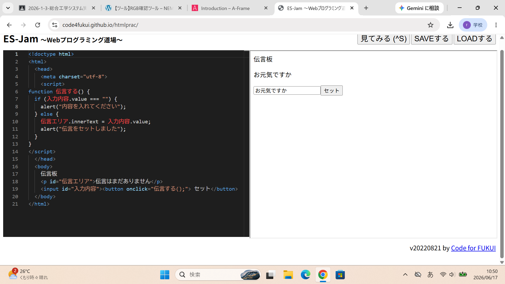

3-2 JavaScript体験：伝言プログラムを作る

伝言板
1.内容
JavaScriptを用いて伝言板をWeb上で作成し、JavaScriptの基本を学んだ。
例えば、画面上部にアラートを表示するものや条件でプログラムを分岐させるものなどを学習した。
2.感想
あまりソースコードを書くという操作をしたことがなかったからか、とても長く大変な作業だと感じた。
しかし自分の手でひとつひとつサイトをつくり上げていくのはとても面白く、達成感のあるものだったので、またやりたいと感じている。